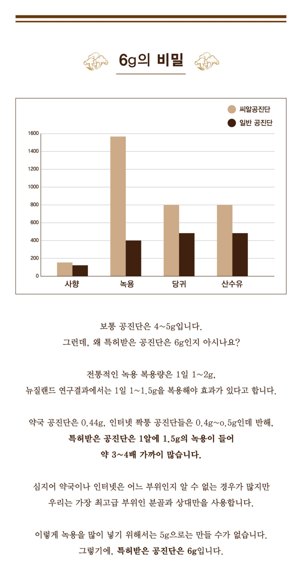
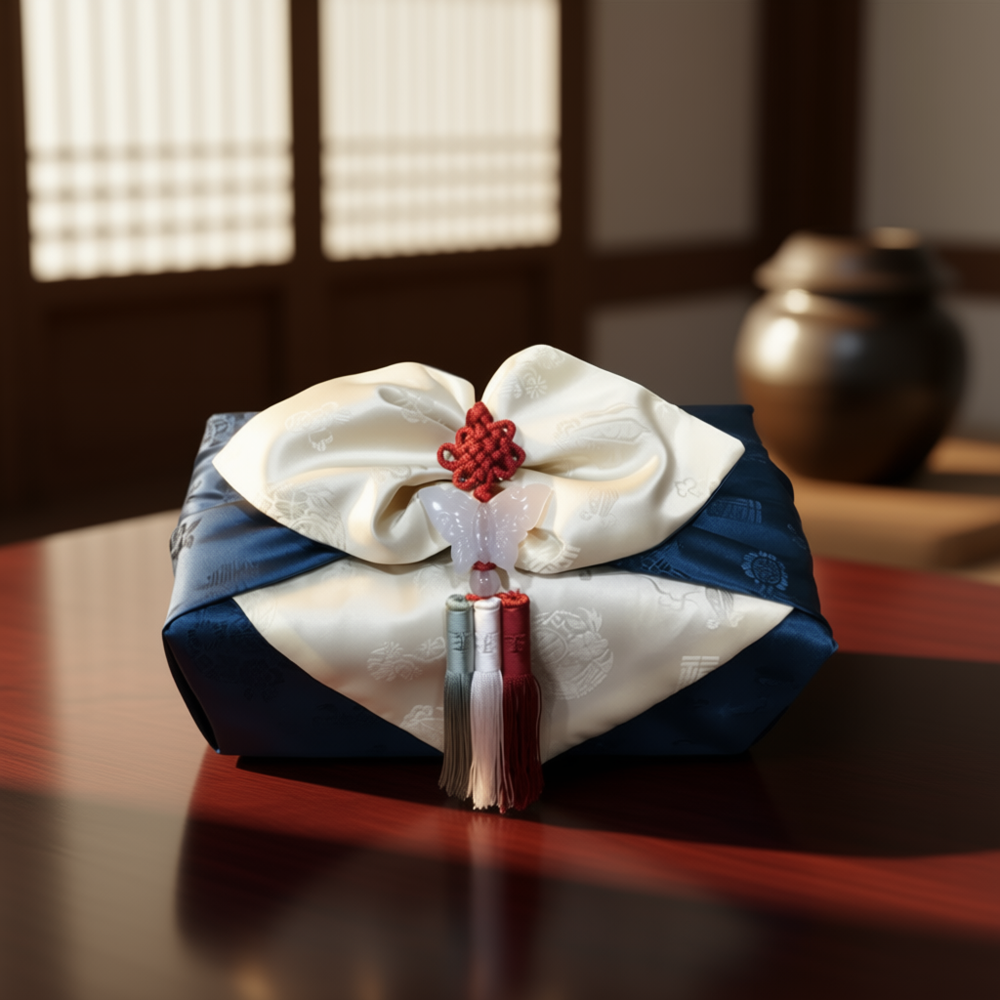

BODY-ALL WIKI
BODY-ALL WIKI
수원 공진단·경옥고 추천:
사향의 정수를 담은 '씨알공진단'과 프리미엄 '경옥고'

기력이 고갈되었을 때 찾는 공진단과 경옥고, 단순히 브랜드가 아닌 '조제 공법'과 '약재의 등급'을 확인하셨나요? 수원 인계동 바디올한의원은 사향을 환의 중심에 응축시킨 씨알(芯)공진단과 현대적 편의성을 더한 스틱형 경옥고를 통해 '전문의약품'으로서의 진짜 효능을 증명합니다.
A. 핵심은 '정품 사향'과 '의료용 약재(hGMP)'의 사용 여부입니다.
시중 유사 제품은 사향을 넣을 수 없는 '식품'입니다. 바디올은 식약처 인증 정품 사향(CITES)만을 사용하며, 녹용 함량을 타사 대비 약 4배(6g) 높여 조제합니다. 경옥고 또한 농산물이 아닌 십수 단계의 검사를 통과한 의료 규격 약재만을 사용하여 압도적인 약효의 격차를 만듭니다.
1. 사향의 휘발을 막는 심(芯) 조제 공법: 바디올 '씨알공진단'
'씨알'은 Seed(씨앗) 혹은 Egg(알)를 의미하며, 귀한 사향을 환의 가장 안쪽(심지)에 밀도 있게 뭉쳐놓아 약효의 손실을 최소화한 고집의 상징입니다.
[바디올 씨알공진단 실제 조제 현장 영상]
- 씨알(芯) 효과: 복용 시 사향의 기운이 몸속에서 폭발적으로 퍼져나가도록 설계되어 신체 이용률을 극대화합니다.
- 압도적 녹용 함량: 타사 대비 녹용 함량을 약 4배 높여, 단순히 기운을 뚫어주는 것을 넘어 원기를 근본적으로 보강합니다.

2. 72시간의 정성, 스틱으로 간편하게: '바디올 경옥고'
동의보감 전통 방식 그대로 옹기에서 72시간을 다스린 경옥고, 이제는 장소 불문하고 가장 편하게 복용하실 수 있습니다.
- 스틱형 개별 포장: 옹기에서 떠먹던 번거로움을 없앴습니다. 가방에 쏙 들어가는 형태로 바쁜 직장인과 수험생에게 최적화되어 있습니다.
- 의약품 전용 약재: 인삼, 생지황, 백복령, 꿀 등 모든 약재를 hGMP 인증 의료용으로만 선별하여 조제합니다.
3. 식품과 차원이 다른 '전문의약품'의 가치
치료용 한약재는 식품과 달리 식약처로부터 까다로운 절차를 걸쳐 인증된 '전문한의약품'입니다.

- 함량의 정직함: 사향 함량을 투명하게 공개하며, 원방(100mg)과 실속(40mg) 라인업을 통해 선택의 폭을 넓혔습니다.
- 한의사 의료진 진단후 처방: 몸상태에 맞는 적절한 처방을 안내드립니다.